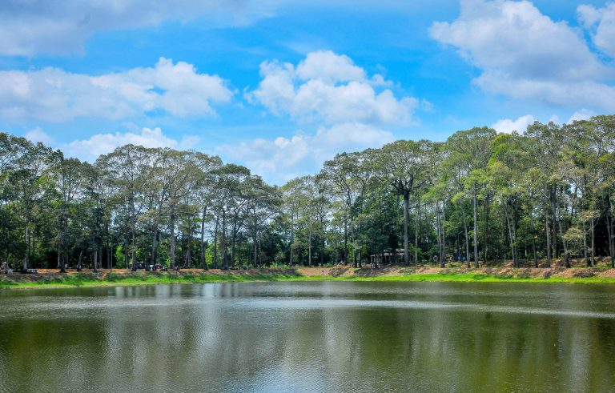
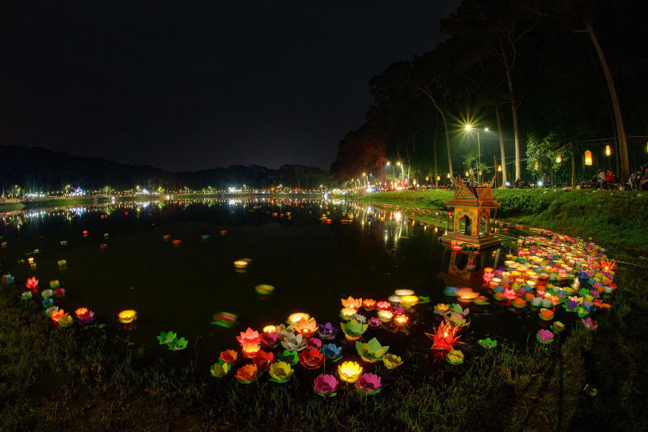

Ao Bà Om là một thắng cảnh nổi tiếng của tỉnh Trà Vinh, gắn liền với văn hóa Khmer Nam Bộ. Ao có mặt nước rộng, yên tĩnh và được bao quanh bởi những hàng cây cổ thụ hàng trăm năm tuổi tạo nên khung cảnh mát mẻ, thơ mộng.
Nơi đây không chỉ là điểm tham quan hấp dẫn mà còn mang nhiều giá trị lịch sử, văn hóa và tâm linh. Vào các dịp lễ hội của người Khmer như Ok Om Bok, Ao Bà Om trở nên nhộn nhịp với nhiều hoạt động văn hóa truyền thống đặc sắc, thu hút đông đảo du khách đến tham quan và khám phá.

